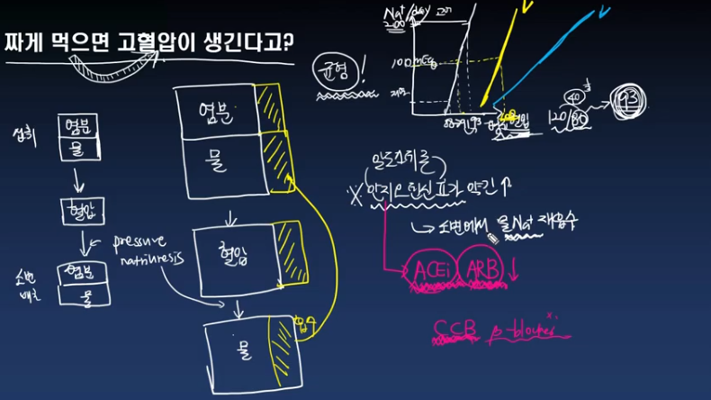
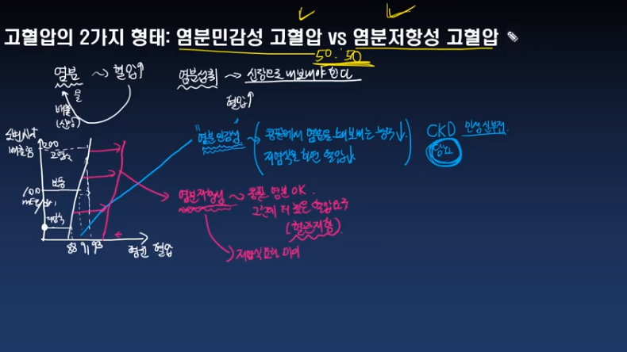

기역과 함께하는 깊이있는 의학공부
당뇨
고혈압
심혈관질환
간질환
위장관질환
빈혈
고혈압이야기 혈관과 혈압 이야기 고혈압이야기
고혈압의 정의: 정상혈압, 고혈압전단계, 고혈압의 기준 youtube
고혈압의 8가지 위험인자 youtube
고혈압이 있을 때 해봐야 할 기본검사 youtube
올바른 혈압 측정방법 youtube
신혈관성 고혈압에 관하여 youtube
고혈압을 왜 치료해야 하는가, 뇌졸중이란 무엇인가 youtube
우리가 궁극적으로 고혈압을 치료해야 하는 이유 youtube
고혈압의 약물치료, 언제부터 해야 하는가 youtube
열받아도 수축하지 않는 두 개의 혈관 youtube
운동할때 혈압이 증가하는 기전 youtube
정상혈압을 유지하기 위한 반사기전 youtube
결국 혈압을 궁극적으로 제어하는 것은 ㄴ이다 youtube
오랫동안 짜게 먹으면 고혈압이 생기는가 youtube

고혈압을 일으키는 것: 레닌-안지오텐신 시스템 youtube
고혈압은 우리몸의 균형이 깨진 상태입니다 youtube
고혈압, 싱겁게 먹자 youtube
고혈압의 생활요법, 정말 혈압이 떨어질까 youtube
고혈압, 생활요법으로 안되면 약 먹어야 youtube
고혈압환자, 혈압 어디까지 낮추어야 하나 youtube
고혈압의 2가지 형태: 염분민감성고혈압 vs 염분저항성고혈압 youtube

짠 음식을 먹으면 왜 혈압이 증가할까 youtube
이완기고혈압에 관하여 youtube
고혈압, 당뇨, 고지혈증 중 가장 문제가 되는 것은 당뇨! youtube
고혈압, 당뇨, 고지혈증 환자가 보험재정을 파탄낸다고? youtube
나는 혈압, 당뇨 둘 중에서 하나만 조절하겠어 youtube
고혈압을 치료해야 하는 궁극적인 이유 - 동맥경화 이야기 youtube
고혈압을 치료해야 하는 궁극적 이유 2편 - 심비대이야기 youtube
칼슘채널차단제의 부작용 youtube
혈관과 혈압이야기
맨위로
혈압이 근본적으로 하는 일은 무엇인가 youtube
우리 몸의 혈관들, 동맥, 정맥, 모세혈관의 역할 youtube
혈압은 왜 120/80일까, 각 부위의 혈관에서의 혈압 youtube
우리 몸 혈액순환에서 통용되는 대원칙 3가지 youtube
혈압과 혈류의 관계 - 혈관에서의 옴의 법칙 youtube
혈관 내 혈액의 흐름 - 층류와 난류 youtube
혈류는 일정하게 유지되어야 한다 youtube
만약 우리몸에 혈압센서가 없다면 youtube
극강으로 혈압을 올리는 중추신경계 허혈반응 youtube
들어는봤나, 심방반사 youtube
맨위로